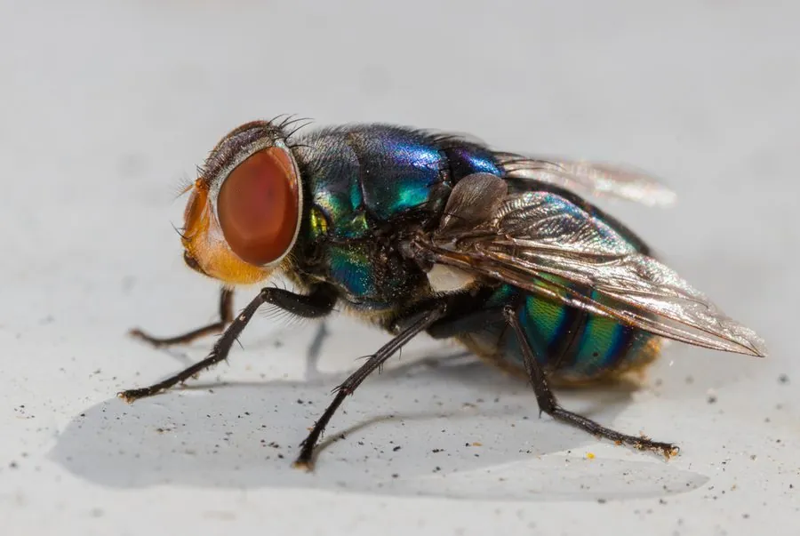

昆虫 · 动物界
大头金蝇 Chrysomya megacephala

热带与亚热带常见的大型丽蝇，头部硕大、复眼暗红，体呈金属蓝绿色，常在腐肉和垃圾附近活动，可传播疾病。
- 分类
- 门节肢动物门纲昆虫纲目双翅目科丽蝇科属金蝇属
- 栖息环境
- 居民点、市场、垃圾堆与腐肉附近，热带和亚热带地区常见
- 地理分布
- 热带和亚热带地区，中国南方、东南亚、非洲及美洲部分地区
- 保护级别
- 暂无评估
物种志
大头金蝇成虫体长 8–11 mm，体形比家蝇大。它的头部特别大，复眼暗红色，雄虫复眼几乎占据整个头部；胸部呈金属蓝绿色或铜绿色，带有光泽，腹部为蓝绿色，背面具横带；翅透明，足黑色。
大头金蝇分布于热带和亚热带地区，包括中国南方、东南亚、非洲和美洲部分地区，栖息于居民点、市场和垃圾堆附近。它多以腐肉、粪便和垃圾中的有机物为食，成虫常聚集在腐败物质和花蜜上，雌虫在腐肉或粪便中产卵，幼虫在腐败物中发育。由于常在垃圾、粪便和食物之间往来，大头金蝇可携带痢疾杆菌、沙门氏菌和寄生虫卵，是重要的卫生害虫；同时它也在分解有机废物中起作用，法医昆虫学中可用其幼虫发育阶段推断死亡时间。
形态与习性
- 食性腐肉、粪便与垃圾中的有机物，成虫也取食花蜜
- 体长成虫 8–11 mm
- 体色胸部金属蓝绿色或铜绿色
- 繁殖雌虫在腐肉或粪便中产卵，幼虫在腐败物中发育
- 卫生影响可携带痢疾杆菌、沙门氏菌与寄生虫卵
- 法医用途幼虫发育阶段可用于推断死亡时间
趣味知识
- 大头金蝇的头部特别大，雄虫复眼几乎占据整个头部。
- 它常在垃圾、粪便和食物之间往来，可传播肠道传染病。
- 在法医昆虫学中，大头金蝇幼虫可用于推断死亡时间。
- 它的胸部呈金属蓝绿色，在阳光下带有明显光泽。